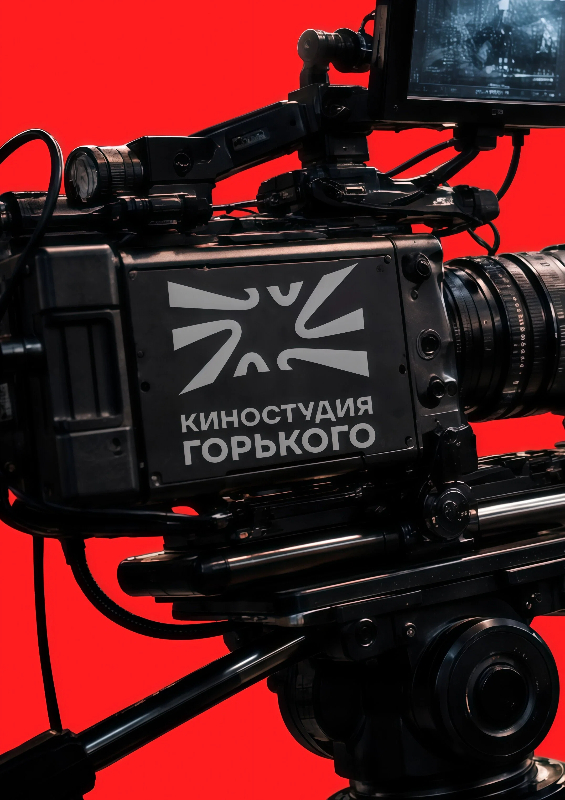

Lookbook
Образ и вещь в чистом визуальном сценарии для бренда или дропа.
portfolio / modeling
Моделинг для проектов, где человек — часть визуальной системы: позинг, силуэт, пластика, одежда, свет и характер кадра.

body / pose / image
В моделинге мне важны не только внешность и одежда, но и то, как тело держит настроение проекта. Поза, жест, линия плеч, взгляд и дистанция до камеры собирают такой же дизайн, как типографика или сетка.
Образ и вещь в чистом визуальном сценарии для бренда или дропа.
Более свободные съемки с настроением, историей и сильным кадром.
Подача кастомной одежды через силуэт, движение и детали.